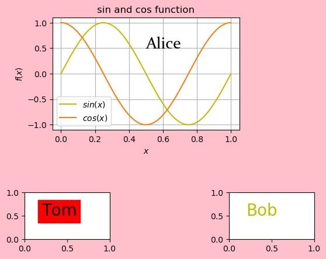

面向对象
面向对象写程序, 是一直在对一些对象作一些操作.
总的来说, Figure 类相当于画板, Axes 相当于画纸
figure : Figure The Figure instance returned will also be passed to new_figure_manager in the backends, which allows to hook custom Figure classes into the pyplot interface. Additional kwargs will be passed to the Figure init function.
plt.figure()返回一个 matplotlib.figure.Figure, 它是一个类,
The top level container for all the plot elements. 它是所有 plot 元素的最上级容器
plt.subplot() 返回一个 Axes 类
The Axes contains most of the figure elements: Axis, Tick, Line2D, Text, Polygon, etc., and sets the coordinate system. Axes 包含大部分 figure 元素, 比如 Axis, Tick, Line2D, Text, Polygon, 等等, 以及 sets the coordinate system.
示例
import numpy as np
from matplotlib import pyplot as plt
# 创建一个画板(画板是一个 Figure 类), 给它取名为 myFigure
myFigure = plt.figure(facecolor='pink')
# 对 myFigure 进行操作, 它可以进行的操作, 可以查看画板(Figure) 这个类的官方文档:
# https://matplotlib.org/3.1.1/api/_as_gen/matplotlib.figure.Figure.html#matplotlib.figure.Figure
# 这里对它进行一个 add_subplot 的操作. 这个操作(或者函数)的返回值是一张画纸(Axes
# 类), 给它取名为 myAxesTom.
# 具体的返回值为 axes : axes.SubplotBase, or another subclass of Axes
myAxesTom = myFigure.add_subplot(4, 3, 10)
# 再放一张叫 myAxesBob 的画线到画板上. 现在 myFigure 上有了 myAxesTom 和
# myAxesBob 两张画纸.
myAxesBob = myFigure.add_subplot(4, 3, 12)
# 对 myFigure 进行另一个操作 add_axes.
# 它的返回值是 axes : Axes (or a subclass of Axes), 是另一种类型的画纸.
# 用这种方法添加画纸, 位置和大小比较灵活
# 括号中的参数是 rect 的值, 是必须给的, 没有默认值. 四个参数分别是 [left,
# bottom, width, height]
# 有了画板, 和画纸, 接下来就是在画纸上画画, 对画纸有哪些操作可以查阅官方文档:
# https://matplotlib.org/3.1.1/api/axes_api.html#matplotlib.axes.Axes
# 这些画纸上可以放 Axis, Tick, Line2D, Text, Polygon 等等
myAxesAlice = myFigure.add_axes([.2, .5, .5, .4])
myAxesAlice.grid() # 再加上网格
# 最基本的是画函数图像, 这个操作就是 plot. 比如在 myAxesAlice 上画一个正弦函数和
# 余弦函数.
x = np.linspace(0, 1, 100)
y1 = np.sin(2*np.pi*x)
y2 = np.cos(2*np.pi*x)
# plot 操作的返回值是一系列 Line2D 类组成的数组. 是我们在画纸上画的许多二维线.
# 它也是一个对象, 可以进行一系列操作:
# https://matplotlib.org/3.1.1/api/_as_gen/matplotlib.lines.Line2D.html#matplotlib.lines.Line2D
# print("Color is", sinFun[1].get_color()) # 对 2D 线进行操作 get_color, 得到它
# 的颜色
sinFun = myAxesAlice.plot(x, y1, x, y2)
sinFun[0].set_color('y') # 对 2D 线进行操作, 设置它的颜色为我们想要的颜
# 色.
sinFun[0].set_label(r'$sin(x)$') # 为 2D 线添加图例.
sinFun[1].set_label(r'$cos(x)$')
# 还可以对这条线做许多的操作, 需要什么就直接查文档了.
# 然后在画纸上做一些其它操作. 实际上, 画纸上已经默认有 x 轴, y轴了. 现在可以对这
# 两个部件来修改.
myAxesAlice.set_xlabel(r'$x$')
myAxesAlice.set_ylabel(r'$f(x)$')
# 添加标题和图例
myAxesAlice.set_title(r'sin and cos function')
myAxesAlice.legend()
# 在纸上写字
Alice = myAxesAlice.text(.5, .5, "Alice", fontsize=20)
Tom = myAxesTom.text(.2, .5, "Tom", fontsize=20)
Bob = myAxesBob.text(.2, .5, "Bob", fontsize=20)
# text 返回的是一个 text 类. 也可以修改它的属性
Tom.set_backgroundcolor('r')
Bob.set_color('y')
# 还可以修改字体
# 用这两句查询已有的字体
#from matplotlib.font_manager import fontManager
#fontManager.ttflist
from matplotlib.font_manager import FontProperties
font0=FontProperties()
font0.set_size('20')
font0.set_family('Constantia')
font0.set_style('normal')
font0.set_variant('normal')
font0.set_stretch('normal')
Alice.set_fontproperties(font0)
myFigure.show()
# 保存图片有一些问题, 在画板上设置的 facecolor 要重新设置才能保存下来.
# 没有 bbox_inches = 'tight' 可能会保存不全图片
myFigure.savefig('myFigure.jpg', bbox_inches = 'tight', facecolor='pink')Results

Code
./2019-10-25-coding-objectPlot/objectPlot.py
Reference:
https://www.zhihu.com/question/51745620
https://zhuanlan.zhihu.com/p/35983270